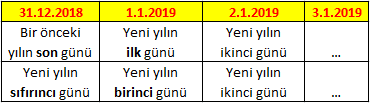

Bugünün tarihinin yılın kaçıncı gününe ve haftasına denk geldiğini bulan formüller aşağıda verilmiştir.
A1 hücresinde BUGÜN() formülü (istediğiniz bir tarih de olabilir) yazıyor olsun. Bu durumda B1 hücresine hangi formülü yazalım ki bize kaçıncı günde olduğu sonucunu döndürsün.
=A1-TARİH(YIL(A1)-1;12;31)
=HAFTANINGÜNÜ(BUGÜN();2)
Formülün Çalışma Biçimi
=BUGÜN() [06.01.2017] >>> A1 Hücresi >>> 42741
=TARİH(YIL(A1)-1;12;31) >>> B1 Hücresi >>> 42735
--------------------------------------------------
FARK: >>> 6
Sonuç nasıl doğru çıkıyor?
TARİH(YIL(A1)-1;12;31) formülü bir yıl öncesinin son gününü veriyor. Sonuç nasıl doğru çıkıyor?
Adım adım anlatıyorum.
6 – 0 = 6 örneğinde olduğu gibi.tarih sayısı – 0 = tarih sayısı bilgisine, yani yılın kaçıncı günü olduğu bilgisine ulaşır mıyız? Evet.

Verilen tarih yılın kaçıncı haftasına denk geliyor?
HAFTANINGÜNÜ formülünde birinci parametrede tarih bilgisini isteniyor. İkinci parametrede de haftanın hangi günden başladığını soruyor. Formülü yazarken 2. parametreye geldiğinizde size seçenekleri günleri ile beraber sunuyor.
=HAFTANINGÜNÜ(BUGÜN();2)
{kind=link}